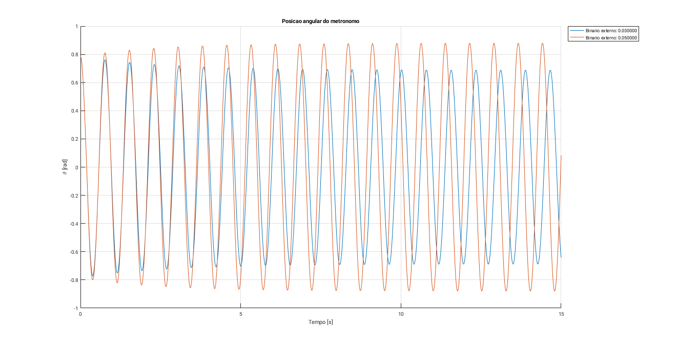

Contents
Exercicio 8
%Reset do ambiente de trabalho clear; close all; %Tempo de simulacao ttotal = 10; %Condicoes iniciais L = 0.5; M = 0.15; l = 0.4; m = 0.2; k = 3; beta = 1; g = 9.8; T = 0; %Calculo das matrizes espaco de estado J = ((M*L^2)/3) + (m * l^2); a1 = (g * (M *(L/2) + m * l) - k) / J; a2 = -(beta / J); A = [0 1 ; a1 a2]; B = [0; 1/J]; C = [1 0; 0 1]; D = [ 0; 0]; %Calculo dos vectores proprios e valores proprios [vec_prop, val_prop] = eig(A); %Calculo numero de vectores proprios [s ~] = size(vec_prop); %Simular para cada vector proprio for n = 1:s x0 = vec_prop(:,n); sim('space_state_model'); teta = y(:,1); teta_p = y (:,2); plot(teta, teta_p, 'DisplayName', sprintf('x0 = [%0f %0f]', x0(1), x0(2))); hold on; end title('Espaco de estados'); xlabel('\theta [rad]'); ylabel('$\dot{\theta}$ [rad/s]', 'Interpreter', 'Latex'); legend('Location', 'NorthEast');
Comentarios:
Verifica-se o esperado teoricamente, escolher como condicoes iniciais os vectores proprios do sistema leva a uma resposta de trajectoria rectilinea no plano de fase.
Exercicio 9
%Reset do ambiente de trabalho clear; close all; %Tempo de simulacao ttotal = 10; %Condicoes iniciais L = 0.25; M = 0.1; k = 0.35; beta = 0.001; g = 9.8; x0 = [pi/4 0]; T = 0; %Funcoes auxiliares aux= @(m, l) k-g*(((M*L)/2) + m*l); J = @(m, l) ((M*L^2)/3) + (m * l^2); qsi = @(m, l) beta./(2 * sqrt(aux(m, l).*J(m,l))); wn = @(m, l) sqrt(aux(m, l) / J(m,l)); %frequencia das oscilacoes naturais wa = @(m, l) wn(m, l) * sqrt(1 - qsi(m, l).^2); %frequencia das oscilacoes amortecidas %Valores para serem testados m = linspace(0, 0.5, 1000); l = linspace(0.05, L, 1000); BPM = [50, 150]; BPM_c = zeros(length(m), length(l)); for n = 1:length(m) for i = 1:length(l) qsi_c = qsi(m(n), l(i)); %verifica se oscilacao e possivel if imag(qsi_c) == 0 && real(qsi_c) < 1 BPM_c(n, i) = (60 * wa( m(n) , l(i) ))/pi; else BPM_c(n, i) = NaN; end end end l_ind = zeros(length(m), length(BPM)); %vector para guardar indices de l error = zeros(length(m), 1); %vector para guardar erros calculados entre BPM pretendido e calculado %testar os valores para m de modo a encontrar os valores de l que originam BPM mais proximo do pretendido for n = 1:length(m) for i = 1:length(BPM) [error_c, l_ind(n, i)] = min(abs(BPM_c(n, :) - BPM(i))); error(n) = error(n) + error_c; end end [~, m_ind] = min(error); m_c = m(m_ind); fprintf("Massa calulada: %f kg\n", m_c); l_c = l(l_ind(m_ind, :)); BPM_v = BPM_c(m_ind, l_ind(m_ind, :)); %valores de BPM calculados BPM_s = zeros(size(BPM)); % vector para guardar BPM simulados %simulacao do sistema com os valores de m e l calulados e verificar a frequencia for n = 1:length(BPM) m = m_c; l = l_c(n); %Calculo das matrizes espaco de estado J = ((M*L^2)/3) + (m * l^2); a1 = (g * (M *(L/2) + m * l) - k) / J; a2 = -(beta / J); A = [0 1 ; a1 a2]; B = [0; 1/J]; C = [1 0; 0 1]; D = [ 0; 0]; sim('space_state_model'); teta = y(:,1); [pcs, locs] = findpeaks(teta); waL = zeros(length(locs)-1, 1); %calculo da frequencia oscilatoria amortecida for i = 1:(length(locs)-1) TaL = t(locs(i+1))-t(locs(i)); waL(i) = (2*pi)/TaL; end BPM_s(n) = (60*mean(waL))/pi; qsi_s = qsi(m, l); wn_s = wn(m, l); fprintf('BPM = %d:\n', BPM(n)); fprintf('\t l = %f m\n', l_c(n)); fprintf('\t BPM teoricamente aproximado: %f\n', BPM_v(n)); fprintf('\t BPM obtido da simulacao: %f\n', BPM_s(n)); figure; plot(t, teta, 'DisplayName', '\theta (t)'); hold on; %envolventes superior e inferior plot(t, x0(1)*exp (-(qsi_s)*(wn_s)*t), 'r', 'DisplayName', 'Envolvente superior'); plot(t, -x0(1)*exp (-(qsi_s)*(wn_s)*t), 'r', 'DisplayName', 'Envolvente inferior'); title(sprintf('Posicao angular do metronomo a %d BPM', BPM(n))); xlabel('Tempo [s]'); ylabel('\theta [rad]'); legend('Location', 'NorthEast'); end
Massa calulada: 0.115616 kg BPM = 50: l = 0.168318 m BPM teoricamente aproximado: 50.009653 BPM obtido da simulacao: 50.000000 BPM = 150: l = 0.062613 m BPM teoricamente aproximado: 149.995169 BPM obtido da simulacao: 150.000000
Comentarios:
Observa-se que o comportamento do sistema vai de acordo com o esperado, verificando-se assim que o dimensionamento da massa e da posicao da mesma estao correctos. Verifica-se tambem que o decaimento, demonstrado pela envolvente, esta directamente relacionado com o valor da frequencia de oscilacoes do sistema, observando-se entao que para um maior BPM existe decaimento mais rapido. As diferencas obtidas entre os valores esperados e obtidos podem ser aproximados aumentando o numero de passos (aumentando o numero de pontos testados para m e l).
Exercicio 10
%Reset do ambiente de trabalho close all; BPM_s_nl = zeros(size(BPM)); BPM_s_nlr = zeros(size(BPM)); %simular o sistema nao linear para cada um dos BPM for n = 1:length(BPM) l = l_c(n); sim('NL_model'); [pcs, locs] = findpeaks(teta); TaNL = zeros(length(locs)-1, 1); waNL = zeros(length(locs)-1, 1); %calcular frequencia oscilatoria amortecida for i = 1:(length(locs)-1) TaNL(i) = t(locs(i+1)) - t(locs(i)); waNL(i) = (2*pi)/TaNL(i); end BPM_s_nl(n) = (60*mean(waNL))/pi; end l_c_nl = l_c; BPM_s_nlr = BPM_s_nl; error = BPM - BPM_s_nlr; error_tolerance = 0.01; %toleracia de erro entro o valor pretendido e calculado while( sum(abs(error) > error_tolerance )) for n = 1:length(BPM) l_c_nl(n) = l_c_nl(n) + (BPM_s_nlr(n)-BPM(n))*0.01*error_tolerance; l = l_c_nl(n); sim('NL_model'); [pcs, locs] = findpeaks(teta); waNL = zeros(length(locs)-1, 1); %calculo da frequencia oscilatoria amortecida for i = 1:(length(locs)-1) TaNL= t(locs(i+1)) - t(locs(i)); waNL(i) = (2*pi)/TaNL; end BPM_s_nlr(n) = (60*mean(waNL))/pi; end error = BPM - BPM_s_nlr; end for n = 1:length(BPM) fprintf('BPM = %d\n\n', BPM(n)); fprintf('\t Sistema linearizado: %f BPM, l=%f m\n', BPM_s(n), l_c(n)); fprintf('\t Sistema nao linear: %f BPM, l=%f m\n', BPM_s_nl(n), l_c(n)); fprintf('\t Sistema nao linear refinado: %f BPM, l=%f m\n', BPM_s_nlr(n), l_c_nl(n)); end
BPM = 50 Sistema linearizado: 50.000000 BPM, l=0.168318 m Sistema nao linear: 52.912049 BPM, l=0.168318 m Sistema nao linear refinado: 50.009882 BPM, l=0.171269 m BPM = 150 Sistema linearizado: 150.000000 BPM, l=0.062613 m Sistema nao linear: 151.463940 BPM, l=0.062613 m Sistema nao linear refinado: 150.004479 BPM, l=0.064128 m
Comentarios:
Utilizando o valor de l calculado anteriormente verifica-se um erro elevado das frequencias de oscilacao obtidas para o sistema nao linearizado. Apos o refinamento obtem-se entao frequencias de oscilacao proximas das pretendidas.
Exercicio 11
%Reset do ambiente de trabalho close all; ttotal = 15; T_v = [ 0.03 0.05 ]; threshold_v = 0.1; tetaf = figure; dtetaf = figure; T_appf = figure; for n = 1:length(T_v) T = T_v(n); l = l_c(2); sim('relojoaria_model'); figure(tetaf); hold on; plot(t, teta, 'DisplayName', sprintf('Binario externo: %f', T)); figure(dtetaf); hold on; plot(t, dteta, 'DisplayName', sprintf('Binario externo: %f', T)); figure(T_appf); hold on; plot(t, T_app, 'DisplayName', sprintf('Binario externo: %f', T)); [pcs, locs] = findpeaks(teta); waT = zeros(length(locs)-1, 1); for i = 1:(length(locs)-1) TaT = t(locs(i+1) )- t(locs(i)); waT(i) = (2*pi)/TaT; end BPM_T = (60*mean(waT))/pi; fprintf('Para 150 BPM pretendidos e binario externo = %f tem-se %f BPM\n', T, BPM_T); end figure(tetaf); grid on; title('Posicao angular do metronomo'); xlabel('Tempo [s]'); ylabel('\theta [rad]'); legend('Location', 'NorthEastOutside'); figure(dtetaf); grid on; title('Velocidade angular do metronomo'); xlabel('Tempo [s]'); ylabel('$\dot{\theta}$ [rad/s]','Interpreter','Latex'); legend('Location', 'NorthEastOutside'); figure(T_appf); grid on; title('Binario aplicado no metronomo'); xlabel('Tempo [s]'); ylabel('T/J'); legend('Location', 'NorthEastOutside');
Para 150 BPM pretendidos e binario externo = 0.030000 tem-se 155.523206 BPM Para 150 BPM pretendidos e binario externo = 0.050000 tem-se 158.230313 BPM
Comentarios:
Para um binario externo de 0.03 pode-se observar que existe um descaimento da amplitude lento na resposta do sistema, acabando por estabilizar.
Para um binario externo de 0.05 pode-se observar que existe um crescimento da amplitudo lento na resposta do sistema, acabando por estabilizar.
Tambem se verifica que para ambos os casos a frequencia e afectada, aumentando. Isto vai de acordo ao esperado fisicamente por esta forca aplicada ao sistema no sentido do movimento faz com o que o sistema adquira maior velocidade angular e por sua altera a frequencia de oscilacao do mesmo.
Exercicio 12
%Reset do ambiente de trabalho close all; l = l_c; for n = 1:length(BPM) J = ((M*L^2)/3) + (m * l(n)^2); a1 = (g * (M *(L/2) + m * l(n)) - k) / J; a2 = -(beta / J); A = [0 1 ; a1 a2]; B = [0; 1/J]; C = [1 0]; D = [0]; figure; bode(ss(A, B, C, D)); grid on; title(sprintf('Diagrama de bode para %d BPM (l = %6f m)', BPM(n), l(n))); end
Comentarios:
Uma vez que nos encontramos na presenca de um sistema de segunda ordem com um valor de qsi < 0.707, verifica-se que o diagrama de bode de amplitude apresenta um pico de ressonancia para os valores de l dado.
Observa-se que o comportamento do diagrama de bode de fase e identico para os dois casos de estudo, algo que nao e surprendente visto que a alteracao do parametro l apenas afecta a localizacao dos polos e por sua vez apenas onde o decrescimo de fase acontece.
Conclui-se que para diferentes valores de l, o sistema responde de forma semelhante mas com velocidades de resposta diferentes. De notar que BPM = 150 e mais rapido.
Exercicio 13
%Reset do ambiente de trabalho close all; %Condicoes iniciais L = 0.25; M = 0.1; k = 0.35; beta = 0.001; g = 9.8; x0 = [pi/4 0]; T = 0; l = l_c(1); J = ((M*L^2)/3) + (m * l^2); a1 = (g * (M *(L/2) + m * l) - k) / J; a2 = -(beta / J); A = [0 1 ; a1 a2]; B = [0; 1/J]; C = [1 0; 0 1]; D = [ 0; 0]; [~,fpeak] = getPeakGain(ss(A,B,C,D)); wp = fpeak; syms m_s positive J = M*L^2/3+m_s*l^2; a = (k-g*((M*L)/2 + m_s*l))/J; wn = sqrt(a); qsi = beta/(2*sqrt(a*J.^2)); m_c = solve(wp == wn*sqrt(1-(2*(qsi^2))), m_s); m_c1 = double(m_c(1)); fprintf('Massa real: %f kg\n', m); fprintf('Massa estimada: %f kg\n', m_c1);
Massa real: 0.115616 kg Massa estimada: 0.115565 kg
Comentarios:
Pode-se verificar que o valor estimado e proximo do real, logo a estrategia de medicao e apropriada.